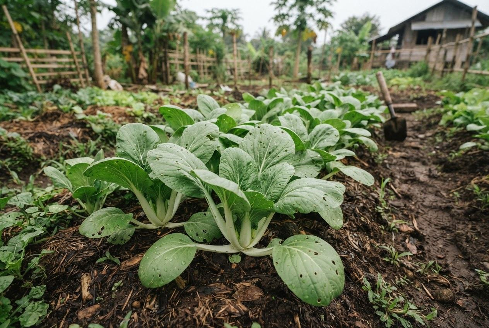

DAY 0
Prepare & sow
Confirm the seed supplier’s instructions and the condition of your beds.
FIELD GUIDE / LEAFY AND FRUIT VEGETABLES
Brassica rapa subsp. chinensis · A familiar leafy vegetable for a carefully planned small trial.

Crop portrait · actual cultivar and field conditions may differ.
YOUR MALINAO FARM MATCH
86 / 100
DEMO FITNot a success probability. Evidence quality is illustrative; certainty is not estimated.
Ranges, timing, and tolerance notes below are unverified demo references. Confirm cultivar-specific guidance locally. ECOCROP is a potential plant-table source, not a verified integration.
EXAMPLE PLANT-TABLE BANDS
Green band = illustrative reference. Marker = entered demo value. Monthly climate values must not be compared to annual requirements without a valid conversion.
WHAT’S OUTSIDE THE FIT SCORE
Inspect where water collects after rain. Soil moisture and drainage are planned factors, not active inputs.
ILLUSTRATIVE GROWING JOURNAL / NOT A FIXED SCHEDULE
DAY 0
Confirm the seed supplier’s instructions and the condition of your beds.
DAYS 7–14
Observe emergence and early growth. Check for pooling water after rain.
DAYS 15–29
Inspect plants regularly. Local pest and nutrient advice may be needed.
DAYS 30–45*
Check maturity for your cultivar and market use, rather than relying on a fixed day.
*Demo growing period from sowing. Actual timing depends on cultivar, establishment, management, and conditions.
TWO OTHER WAYS TO GROW
Kangkong offers a different water-management context. Mongo has a longer cycle and a different rainfall caution. Neither is automatically a better choice.
Is this bed draining well after heavy rain?
Which pechay cultivar is locally available?
What pests are active nearby this month?
An agriculture adviser can help check what the demo cannot.